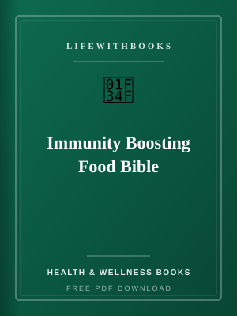

Immunity Boosting Food Bible
Original LifeWithBooks guide — free PDF you can keep and share.
↓ Download Free PDFAbout Immunity Boosting Food Bible
Immunity Boosting Food Bible is an original LifeWithBooks study guide designed for practical learners worldwide. Food-first immune support with 15 food profiles, nutrient science, meal plans and smoothie recipes. Covers vitamin C, vitamin D, zinc, protein and omega-3 fats with practical meal ideas. Garlic, ginger, citrus, leafy greens, yogurt and more — explained clearly. Full PDF guide available immediately. Unlike pirated scans floating around the internet, this guide was written by our editorial team to explain concepts clearly, organise study steps and point you toward legitimate practice materials. You can download the PDF, annotate it on any device and return to sections as your exam or course schedule demands. Whether you are reading for pleasure, preparing for an exam or building an English reading habit, Immunity Boosting Food Bible rewards attention. The prose is structured for busy students who need clarity fast. Give yourself permission to read slowly; understanding beats speed. Mobile learners download Immunity Boosting Food Bible once, then highlight offline during commutes — consistency beats marathon cramming. For health books goals, revisit Immunity Boosting Food Bible after one week, one month and three months; spaced recall locks vocabulary in place. Annotate Immunity Boosting Food Bible with questions in the margin; good readers argue with the text instead of passively highlighting.
Build a one-page summary of Immunity Boosting Food Bible when you finish; if you cannot, reread the sections that still feel fuzzy. Parents supporting teens with Immunity Boosting Food Bible should ask for weekly three-sentence recaps — accountability without micromanaging. Exam candidates using Immunity Boosting Food Bible benefit from timed practice sections that mirror real paper length and instructions. Combine Immunity Boosting Food Bible with one free classic from our library to see how formal and literary English reinforce each other. Start Immunity Boosting Food Bible with the glossary or index if it has one; knowing terminology upfront prevents mid-chapter frustration. Treat Immunity Boosting Food Bible as a course, not a brochure: schedule finish dates and celebrate milestones to maintain momentum. When studying Immunity Boosting Food Bible, keep a simple error log: every mistake becomes a flashcard or margin note you revisit on weekends. If Immunity Boosting Food Bible feels dense, read with this guide in mind: break sessions at natural unit boundaries instead of arbitrary page counts. LifeWithBooks suggests bookmarking three passages in Immunity Boosting Food Bible that surprised you — they become anchors for future revision. Compare your notes on Immunity Boosting Food Bible with a study partner monthly; explaining ideas aloud exposes gaps textbooks hide. Mobile learners download Immunity Boosting Food Bible once, then highlight offline during commutes — consistency beats marathon cramming. For health books goals, revisit Immunity Boosting Food Bible after one week, one month and three months; spaced recall locks vocabulary in place.
What You Will Discover
- Study pacing: Map Immunity Boosting Food Bible across a realistic weekly schedule for health books goals without cramming every topic at once.
- Core skills: Identify the vocabulary, frameworks and question types this guide emphasises for exams and real conversation.
- Practice loop: Turn each chapter into short exercises — notes, flashcards, or timed drills — so reading becomes retention.
- Official pairing: Use this PDF alongside board syllabi, publisher textbooks and past papers rather than as a lone source.
- Library synergy: Combine Immunity Boosting Food Bible with related free titles on LifeWithBooks to strengthen reading and grammar together.
About Public Domain Classic
This work comes from the public-domain tradition — literature whose copyright has expired and which belongs to readers everywhere. The author shaped the language, stories and ideas of their era; modern editions preserve texts that classrooms, filmmakers and readers still return to generation after generation. Major works include See the title page and table of contents of this edition for the complete work. Legacy: Public-domain classics remain the foundation of literary education and free cultural access online.
Why Read This Book in 2026
If you enjoy thoughtful writing that rewards patience, you will find a lot to love here. Students tell us they want guides that respect their time — not 400 pages of padding. Immunity Boosting Food Bible focuses on what matters for application: clear explanations, realistic study pacing and links to further practice. Teachers, parents and self-learners use LifeWithBooks because the download is instant and legal. You can print chapters, share the link with a study group or keep a offline copy for travel.
Historical Context
First published around 2026, this work emerged during a period of rapid social change — industrial growth, expanding literacy, new ideas about class, gender and empire. Contemporary reviewers debated its morality and style, which often signals a book that challenged comfortable assumptions. Today Immunity Boosting Food Bible is read differently: modern audiences notice details earlier generations skimmed, and that fresh debate keeps the text alive in classrooms and online forums. LifeWithBooks published this guide in 2026 as part of our mission to pair free legal classics with original study material for global learners.